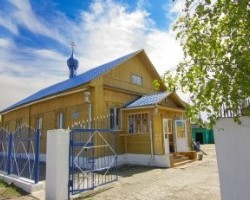
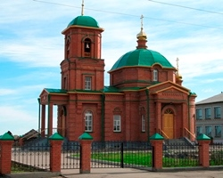
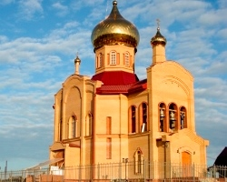
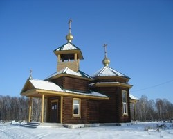
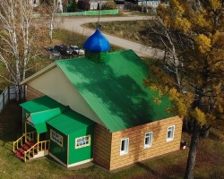

Храмы Асиновского района
Свято-Покровский храм (город Aсино)

В 1974 г. община верующих в Асино насчитывала около 200 человек. Поначалу община не имела собственных богослужебных помещений, и духовное окормление производилось томскими священниками, люди ездили на богослужения в Томск. К 1974 году были зарегистрированы множественные обращения в местные органы власти с просьбами разрешить общине начало строительства православного храма. Это желание не находило поддержки у властных структур. Первоначально не было разрешения не только начинать строительство, но и был наложен запрет на посещение верующих г. Асино томскими священниками. С активными членами прихода проводилась идеологическая работа, престарелых и малограмотных людей уговаривали отказаться от подписей в заявлении на строительство храма. Сначала храм стали строить каменным. Был выполнен большой объем работ, возведены стены. Но проверяющие, найдя формальные отклонения от проекта, приказали полностью разобрать кладку. Позже было дано разрешение возводить только деревянный храм.
Храм Георгия Победоносца (село Ново-Кусково)

Официально приход открылся вероятно в 1850 г. во время основания с.Ново-Кусково. Скорее всего в тоже время был построен храм в честь Казанской иконы Божией Матери.Записи в метрических книгах прекращаются в 1921 г. Поэтому сведений о служащих священниках не имеется, где-то в этих годах храм был закрыт, приход разогнан до 2001 года когда приход был воссоздан с благословения архиепископа Ростислава. С 2001 г также было начато строительство храма в честь св. Георгия Победоносца, которое было успешно завершено в 2006 г. чином великого освящения, которое совершил архиепископ Ростислав. С 2001 г. по настоящее время служение на приходе осуществляет священник Андрей Шинкаренко.
Храм Александра Невского (село Новониколаевка)

Храм в честь святого благоверного великого князя Александра Невского был построен по инициативе и на средства генерального директора завода «Радиус» г. Санкт-Петербурга Лихачева Юрия Михайловича, который родился в с. Новониколаевка. Храм строился пять лет и был освящен в 2008 году. Он стал главным архитектурным сооружением села и является самым большим храмом в Асиновском районе. Святыня храма — частица мощей св. Александра Невского. Храм примечателен своим пятиярусным иконостасом, выполненным в традициях древнерусской иконописи и набором колоколов, самый большой из которых весит 1200 кг.
Часовня Преображения Господня в Асино на городском кладбище

Деревянная часовня Преображения Господня на городском кладбище г. Асино запроектирована в 1994 и освящена в 2009. Построена в традиционных формах народного зодчества, в плане имеет форму восьмерика верхнего и нижнего основного объёма, с западной стороны колокольня. Основная кровля шатрового типа с главками и крестом. Весь объём объединяет двускатная кровля, начиная с крыльца и выходя за приделы часовни с восточной стороны (при проектировании заложена возможность пристройки алтаря). Архитекторы: Худяков С. Ю., Артамонов М. В. ГИП: Силенкова Г. Э. («УЧМОНОЛИТСТРОЙПРОЕКТ») Конструкторы: Светлова М. П., Фалеева Л. Я. (ОГУП ПИ «Томскгражданпроект»).
Храм Казанской иконы Божией Матери (село Мало-Жирово)

Долгое время в селе имелась часовня (молитвенный дом). Видимо, поэтому в метрических книгах, хранящихся в муниципальном архиве г. Асино Мало–Жировской церкви за 1895 год и далее содержатся записи только о крещении. Все остальные обряды совершались в Вороно — Пашенской церкви. Здание церкви было построено в 1909 году, но долгое время собственного церковного притча не было. В архиве хранится документ, датированный февралем 1912 года. «Из приговора сельского общества об открытии церкви в С. Мало — Жирово: здание для церкви уже построено на свои средства, но самостоятельного прихода и священника не имеется. Просят 3000 рублей на строительство причтовых домов и выделение средств на содержание прихода и оплату священника». Из решения Томского переселенческого комитета: «Оставить без удовлетворения ходатайство об открытии самостоятельного прихода с отпуском средств от казны на постройку храмов и на содержание причтов в виду того, что задачи переселенческого комитета не входит удовлетворять духовные нужды старожилов и ввиду недостаточности кредитов».